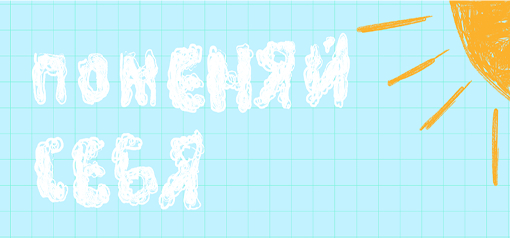
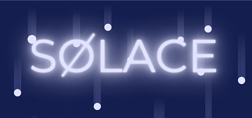

Отель, созданный для тех, кто ищет спокойствие и восстановление духа
вдали от повседневной грусти и стрессов. Альтернативный мир становится
площадкой для личностного роста и перезагрузки.
Для нас это не просто сон.
|
 |
Сайт-викторина | В этом интерактивном веб плакате вы сможете погрузиться в детство, и возможно что-то изменить в нем. |
|
 |
Веб-плакат | Веб-плакат является визуализацией космического пространства, через которое проходит человек, погружаясь в альтернативную реальность. |